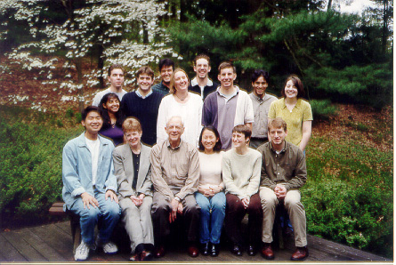

The System Dynamics in Education Project (SDEP) is a part of the undergraduate work study program at the Massachusetts Institute of Technology. The Project was founded in 1990, and its primary focus is the use of system dynamics and learner-centered learning in education. SDEP is a group of students working under the supervision of Prof. Jay W. Forrester, founder of system dynamics.
The group is writing Road Maps which is a guide to learning system dynamics. Road Maps is a series of self-study guides that use various modeling exercises and selected literature to provide a simple and easily understandable way for learning the methods and principles of system dynamics.
Nan Lux, the Project advisor, runs the K-12 system dynamics email list that serves as an email discussion group where people can share their insights on using system dynamics and system thinking in K-12 education.
The material prepared by SDEP can be obtained through the Creative Learning Exchange.
The System Dynamics in Education Project is made possible by generous gifts from corporate and private sponsors.
MIT SDEP Home | Help | Comments | Index